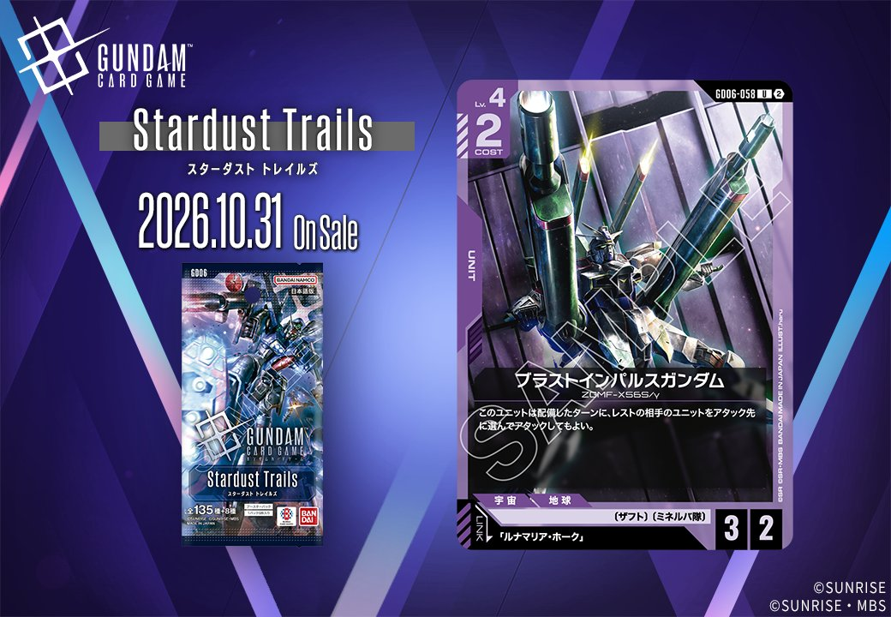
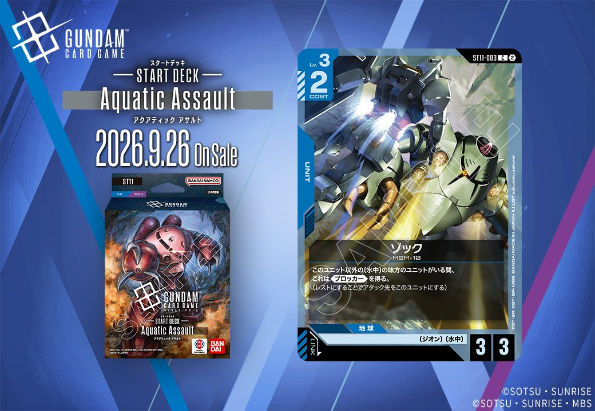

今回は2枚のUNITを紹介します。Stardust Trails(GD06)からは紫のUNIT「ブラストインパルスガンダム」(GD06-058)が登場し、「ルナマリア・ホーク」とのリンクを持ちます。あわせてST11収録の青のUNIT「ゾック」(ST11-003)も取り上げます。発売日は前者が2026年10月31日、後者が2026年9月26日です。

ブラストインパルスガンダム (GD06-058)
| 色 | 紫 | タイプ | UNIT |
| Lv | 4 | コスト | 2 |
| AP | 3 | HP | 2 |
| 特徴 | 〔ザフト〕、〔ミネルバ隊〕 | ||
| リンク条件 | 「ルナマリア・ホーク」 | ||
効果: このユニットは配備したターンに、レストの相手のユニットをアタック先に選んでアタックしてもよい。
ブラストインパルスガンダム（GD06-058）はLv.4/COST2でAP3/HP2、配備したターンにレストの相手ユニットをアタック先へ選べるため、寝ている相手ユニットを能動的に処理できる点が持ち味です。「ソードインパルスガンダム(ST09-006)」や「ソードインパルスガンダム(GD04-056)」の効果で相手をレストにしてから配備すると、このアタック指定が直接活きます。 リンク先は「ルナマリア・ホーク」で、〔ザフト〕〔ミネルバ隊〕を共有する構成での運用が想定されます。2026-10-31発売。

ゾック (ST11-003)
| 色 | 青 | タイプ | UNIT |
| Lv | 3 | コスト | 2 |
| AP | 3 | HP | 3 |
| 特徴 | 〔ジオン〕、〔水中〕 | ||
効果: このユニット以外の〔水中〕の味方のユニットがいる間、これは《ブロッカー》を得る。(レストにすることでアタック先をこのユニットにする)
ゾック(ST11-003)はCOST2でAP3/HP3と標準的なステータスを持ち、他の〔水中〕の味方ユニットがいる間《ブロッカー》を得る点が特徴です。単体では条件を満たせないため、複数の〔水中〕ユニットを並べる盤面作りが前提となり、身代わりで味方を守る運用が中心になります。2026-09-26発売のST11収録で、リンクは持ちません。


関連カード
-
 ソードインパルスガンダム(GD04-056)紫系デッキ内採用率6.4% (299デッキ)
ソードインパルスガンダム(GD04-056)紫系デッキ内採用率6.4% (299デッキ) -
 ザクウォーリア(ST09-005)紫系デッキ内採用率5.1% (240デッキ)
ザクウォーリア(ST09-005)紫系デッキ内採用率5.1% (240デッキ) -
 インパルスガンダム(ST09-001)紫系デッキ内採用率2.1% (97デッキ)
インパルスガンダム(ST09-001)紫系デッキ内採用率2.1% (97デッキ) -
 フォースインパルスガンダム(ST09-002)紫系デッキ内採用率2% (95デッキ)
フォースインパルスガンダム(ST09-002)紫系デッキ内採用率2% (95デッキ) -
 ソードインパルスガンダム(ST09-006)紫系デッキ内採用率1.9% (87デッキ)
ソードインパルスガンダム(ST09-006)紫系デッキ内採用率1.9% (87デッキ) -
 ガナーザクウォーリア（ルナマリア・ホーク専用機）(GD04-062)紫系デッキ内採用率0% (2デッキ)
ガナーザクウォーリア（ルナマリア・ホーク専用機）(GD04-062)紫系デッキ内採用率0% (2デッキ) -
ルナマリア・ホーク(GD04-095)紫系デッキ内採用率0% (1デッキ)
-
ルナマリア・ホーク(GD04-095_p1)紫系デッキ内採用率0% (0デッキ)
-
 マッド・アングラー(ST11-016)NEW青系 — 同色・共通特徴: ジオン、水中（新カード）
マッド・アングラー(ST11-016)NEW青系 — 同色・共通特徴: ジオン、水中（新カード） -
 アッガイ(ST11-002)NEW青系 — 同色・共通特徴: ジオン、水中（新カード）
アッガイ(ST11-002)NEW青系 — 同色・共通特徴: ジオン、水中（新カード）